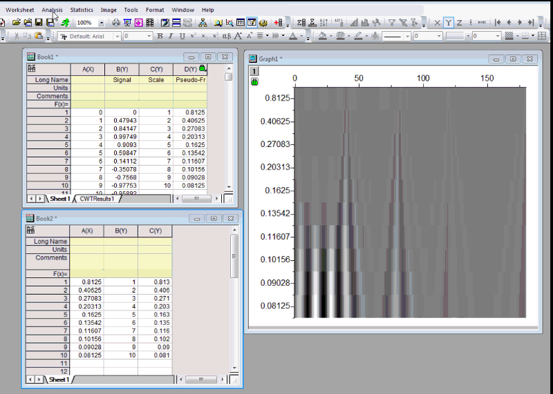

FAQ-698 連続ウェーブレットのイメージプロットで疑似周波数軸スケールを表示するには？
Pseudo-Frequency-in-cwt
最終更新: 2018/07/30
バージョン2015から、Originでは連続ウェーブレット変換の出力イメージプロットのデフォルト軸スケールとして疑似周波数をサポートしています。疑似周波数の軸スケールを使用するには、cwt ダイアログボックスで疑似周波数を使用のチェックボックスにチェックを付けます。連続ウェーブレットイメージは疑似周波数スケールで生成されます。
Originが生成した目盛ラベルが適切でない時は、目盛の位置とラベルを手動で設定し、連続ウェーブレットイメージに適用できます。簡単に操作するために、Originは、疑似周波数列を提供します。
- 連続ウェーブレットダイアログで疑似周波数を使用のチェックを付けてソースワークシートに疑似周波数列を取得します。2つの列、たとえばA列とB列を追加します。列Aに主目盛ラベルとして使用したい主目盛を入力します。
- 目盛位置として使用するための対応するスケール値を計算し、B列に入力します。疑似周波数列をXとし、スケール列を対応するYとします。interp1ダイアログを開きます。疑似周波数列とスケール列を入力として選択し、目盛ラベル列のA列を補間するX値として設定し、補間を実行して対応する目盛の位置を取得します。補間結果を列Bに出力します。
- cwtイメージグラフに戻り、Y 軸をダブルクリックして軸ダイアログを開きます。スケールタブで、主目盛のタイプをカスタム位置とし、位置をB列とします。目盛ラベルタブを開き、表示サブタブで、タイプを主目盛ラベル用データセットにし、Col(A)をデータセット名として設定します。これで正しい軸目盛とラベルがイメージプロットに表示されます。
- 
キーワード:ウェーブレット